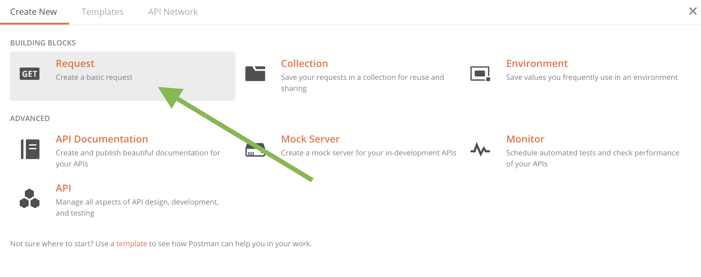
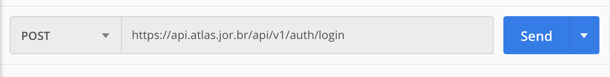

Acesso via Hoppscotch
Hoppscotch é um aplicativo online gratuito direto e fácil de usar. Não possui todos recursos de outros aplicativos, como o Postman, mas facilita e muito a utilização para uso simples da API.
Abra o site do Hoppscotch. Você pode escolher se logar via Google ou GitHub para ter uma experiência melhor, mas não é necessário para utilizar a ferramenta.
Sua área de trabalho vai estar totalmente em branco.

1º Passo: retornar seu token de acesso
Para acessar a API do Atlas da Notícia você vai precisar estar cadastrado no nosso sistema, o que lhe permitirá gerar uma chave de acesso (ou token) para que sua aplicação possa puxar nossos dados. Isso é feito para evitar abusos nos servidores, aumentado a segurança.
A forma correta de conseguir seu token é realizar uma requisição via método POST, que solicita ao servidor o envio de dados anexados ao corpo (ou body) da requisição.
No canto superior direito do Hoppscotch, altere o método para POST, acrescentando, ao lado, a seguinte URL https://api.atlas.jor.br/api/v1/auth/login.

Antes de enviar sua requisição para o servidor, vamos precisar também incluir suas credenciais de acesso à API – o mesmo email e senha que você usou para se cadastrar.
Certifique-se de que o Content Type esteja como application/json (que nada mais é do que o formato que o token vai ser entregue para você) e que o botão Raw input esteja com o tick na esquerda, ou seja, desativado (também é possível fazer a requisição via Raw input, mas nesse caso não é necessário). Você pode também acrescentar um rótulo (label) como referência se quiser.
Agora basta clicar ENVIAR.

Caso tudo esteja certo com sua requisição aos nossos servidores, você vai receber no pé da página uma mensagem de resposta de status 200 (sucesso), com o seu token logo abaixo. Você vai precisar copiar apenas do token (pode desconsiderar os outros dois campos).
Note que o prazo de validade de cada token é de 3.600 segundos, ou uma hora, a partir da qual ele não será mais válido e o processo para requisitar uma nova chave terá que ser feito novamente.

Com o token em mãos, podemos prosseguir para buscar os dados diretamente da API
2º Passo: utilizar o token
Agora vamos mudar o método, utilizando agora GET, com o qual, em vez de solicitar aceitação de dados enviados pelo usuário, vamos pedir para o servidor enviar os dados que queremos.
Também será necessário acrescentar a autenticação de suas credenciais, mediante o uso do bearer token que você copiou agora pouco, conforme a figura abaixo.

3º Passo: retornando os dados
A parte chata, de utilização do token, já ficou para trás. Agora, tudo o que vamos fazer é trabalhar com os dados do Atlas da Notícia.
Nossa API funciona a partir de endpoints, ou seja, pontos que retornam os dados que queremos.
Como exemplo, vamos utilizar o endpoint que nos retorna os dados com os números desertos de notícia (ou seja, municípios sem organizações jornalísticas) agregados por estado. Para saber todos os endpoints e retornos possíveis, acesse a documentação.
Coloque o seguinte endpoint na barra de URL e clique enviar: https://api.atlas.jor.br/api/v1/data/qtd-cities-without-media-state
Se funcionar, no campo de resposta, no pé da página, a servidor vai retornar os dados solicitados, utilizando um formato de armazenamento de dados chamado JSON.
Voilá! Você consegui acessar os dados. Copie-os utilizando o botão no canto direito (seta vermelha da imagem).

Agora, basta utilizar um conversor de JSON para csv, como o Konklone, para que tenha os dados todos tabulados para você utilizar.
Acesso via Postman
Postman é um aplicativo que, entre outras coisas, facilita o acesso aos dados de uma API. Você pode fazer o download do aplicativo neste link. Outros aplicativos e serviços similares incluem Google APIGee, Amazon API Gateway.
Abra o Postman e clique em New >> Get Request.

Na barra de naveração é necessário selecionar a opção POST e colocar a seguinte URL: https://api.atlas.jor.br/api/v1/auth/login. Essa URL vai fazer com que sua requisição de login seja feita ao servidor do Atlas da Notícia.

Agora é necessário colocar as credenciais necessárias para que o login seja feito. Utilize seu login e senha escolhidos no momento do registro da API.
Para isso, clique na aba Body e coloque copie e cole o seguinte código substituindo os valores abaixo por sua própria credencial:
{
"email": "nome@email.com",
"password": "12345678"
}
Isso vai gerar um access_token, com o qual você vai poder retornar dados do nosso banco de dados. Esse recurso é utilizado para dar mais segurança às informações e evitar abusos a nossos servidores gratuitos.
Certifique-se de que o formato escolhido esteja com a caixa selecionada RAW e que o retorno seja em JSON, conforme as flechas indicam na figura abaixo.

Clique no botão azul SEND, o que retornará seu token mais abaixo na tela.
O próximo passo é criar uma aba nova no Postman e utilizar a função GET. Isso que vai retornar os dados para dentro de seu aplicativo.
Mas antes, é necessário informar à sua aplicação o token que você vai utilizar, caso contrário o servidor não vai reconhecer seu login. Clique em Authorization e escolha o tipo de autorização como Type = Bearer. Na caixa do lado
é possível colar o token que você acabou de gerar na outra aba. Lembrando que esse token se renova a cada uma hora.
Um exemplo de API que você pode testar para ver se seu retorno está funcionando é https://api.atlas.jor.br/api/v1/data/analytic?estado=RO, a qual retorna todos os veículos do Estado de Rondônia.
Para saber as URLs válidas, que retornam dados, é preciso ler a documentação da API e entender as combinações possíveis. Por exemplo a URL https://api.atlas.jor.br/api/v1/data/analytic?segmento=Online&estado=SP retorna todos os veículos online do Estado de São Paulo.
Basta clicar em SEND e ver abaixo na tela o resultado.